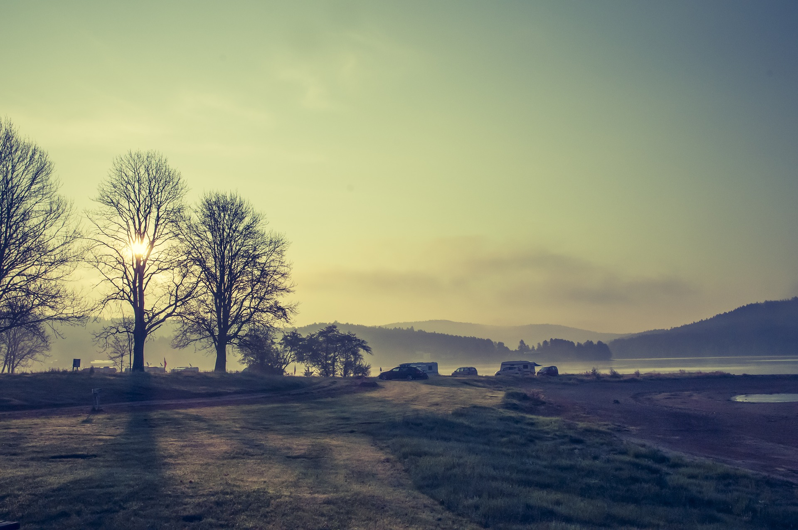

Välkommen till Östansjö Camping!
Hos oss kan du hyra stugor, ställplats eller tältplats i en rofylld och naturnära miljö. Campingen ligger intill Storsandsjöns östra strand och här finns allt du och din familj behöver för en aktiv och energigivande semester.
I området finns flera olika vandringsleder samt goda fiskemöjligheter. Fiskekort kan du köpa från oss i receptionen. Vi hyr också ut kanoter, roddbåtar och cyklar.
Barnfamiljer kan glädja sig åt en långgrund strand, en nyligen uppfräschad lekplats, en bollplan och en minigolfbana.
Välkommen att boka din vistelse hos oss!
Aktuellt
2020-10-01 Stängt för säsongen
Tack för den här gången! Välkomna igen i maj 2021 (förutsatt att Folkhälsomyndigheten inte säger något annat).
2020-09-01 Vi har fortsatt öppet med begränsad kapacitet
Pga COVID-19 tar vi just nu emot färre gäster. Därför är det viktigt att ni bokar innan ni kommer.